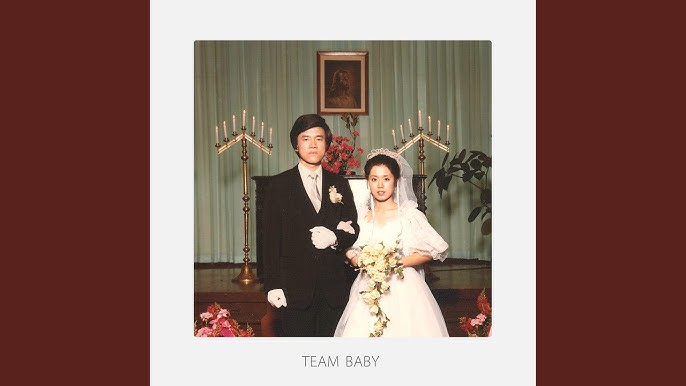
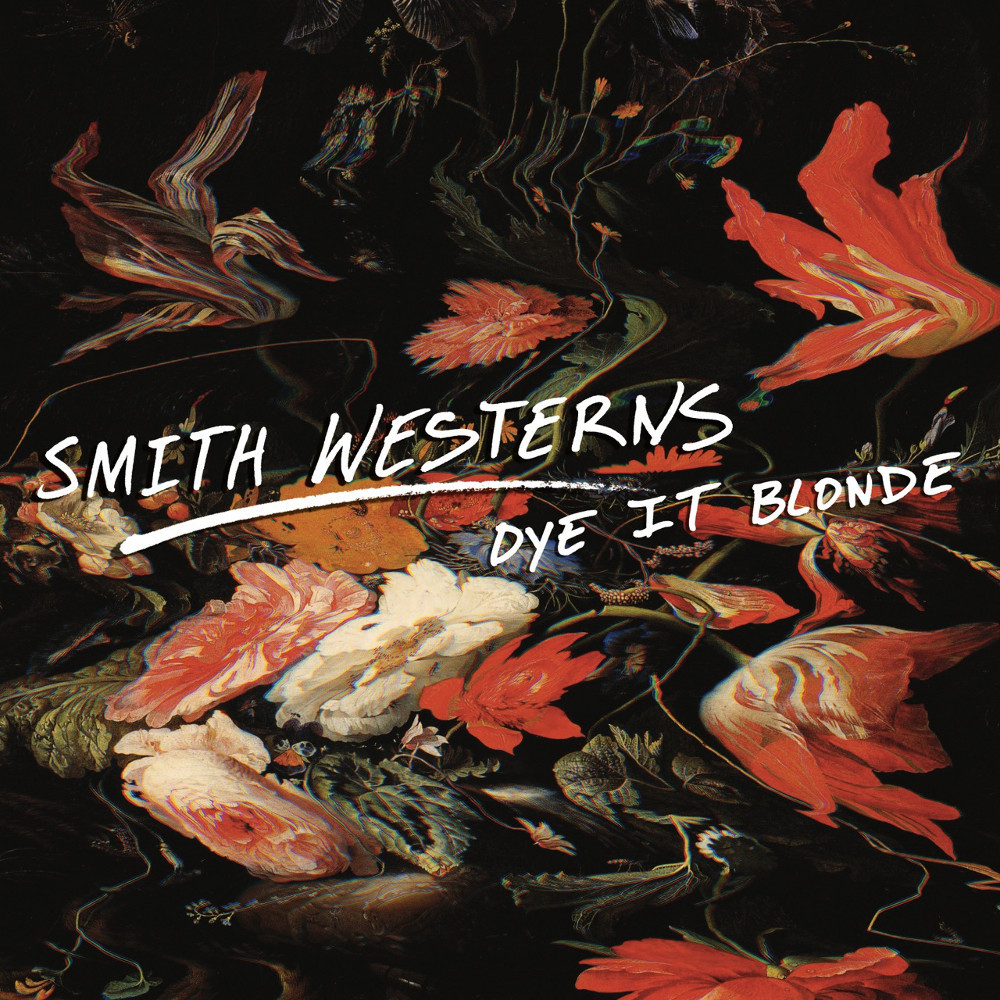
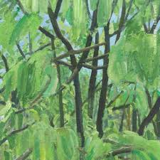
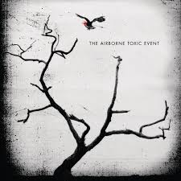
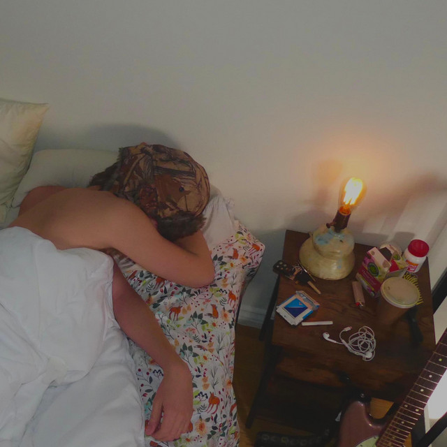
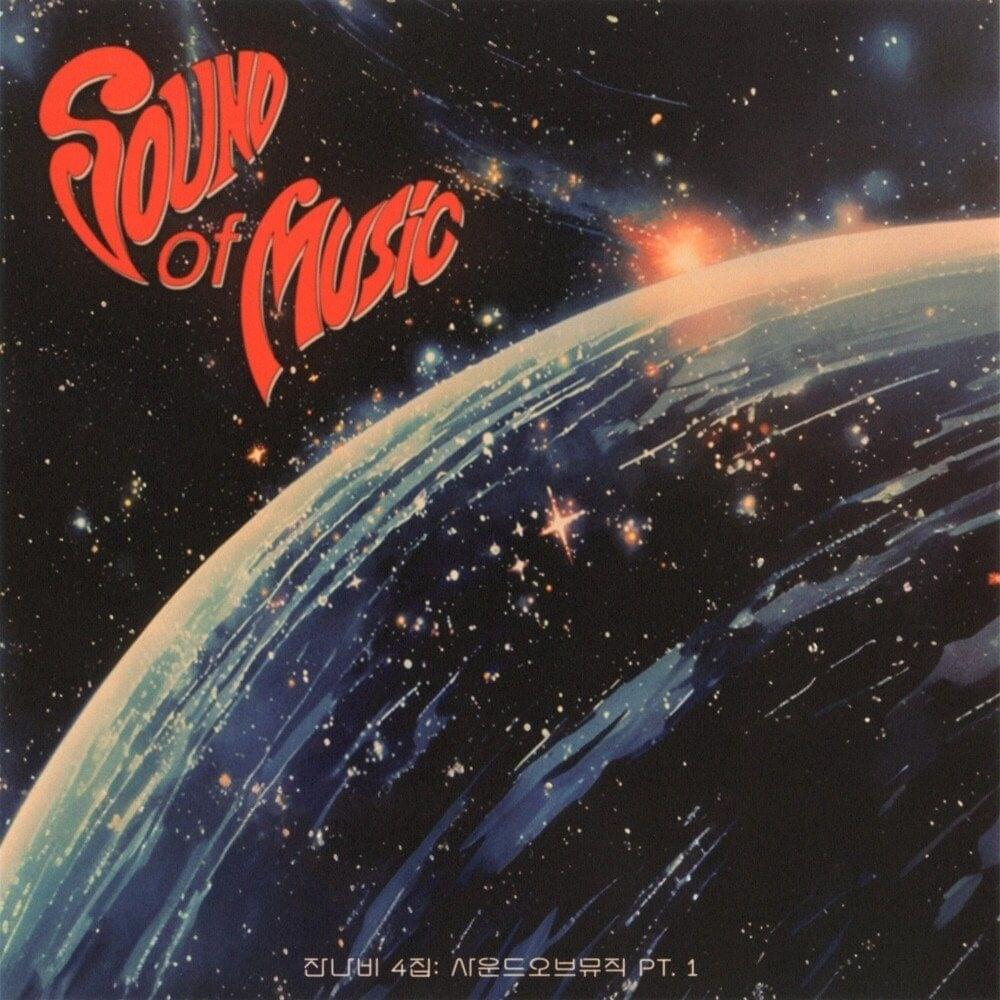
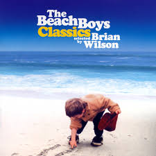

STEVEN'S MUSIC LOG
My Top Tracks
1
▼

EVERYTHING
The Black Skirts
2
▼
Intercourse
Malcolm Todd
3
▼

Imagine Pt.3
Smith Westerns
4
▼

ASTEARSGOBY
JANNABI
5
 ▼
▼
Let It Happen
Tame Impala
6
▼
Whatever
Oasis
7
▼

Happiness Is Overrated
The Airborne Toxic Event
8
▼

Art House
Malcolm Todd
9
▼

May The TENDERNESS Be With You!
JANNABI
10
▼

California Feelin'
The Beach Boys
1
 ▼
▼
Song Title Here
Artist Name
2
 ▼
▼
Song Title Here
Artist Name
3
 ▼
▼
Song Title Here
Artist Name